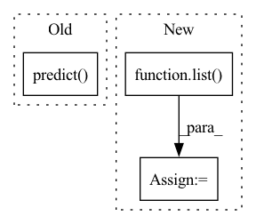

Pattern ID :13715
Before Change
output = to_numpy(output, framework)
outputs.append(output)
else:
outputs.append(to_numpy(model.predict( sample) , framework))
for i, output in enumerate(outputs):
if isinstance(output, (list, tuple)):After Change
forward_kw_names: Optional[Tuple[str]] = None,
**kwargs,
):
output_names = list( output_metadata.keys())
outputs = []
output_data_path = get_package_path(workdir, model_name) / self.get_output_relative_path()
output_data_path.mkdir(parents=True, exist_ok=True)
In pattern: SUPERPATTERN
Frequency: 3
Non-data size: 3
Instances Fragment ID: 45828440
Project Name: triton-inference-server/model_navigator
Commit Name: 3d1dcb4d73be04622ab7d541ea506a54557d95e5
Time: 2022-02-22
Author: ptarasiewicz@nvidia.com
File Name: model_navigator/framework_api/commands/data_dump/samples.py
M Class Name: DumpOutputModelData
N Class Name: DumpOutputModelData
M Method Name: __call__(10)
N Method Name: __call__(7)
M Parent Class: Command
N Parent Class: Command
M File Name: model_navigator/framework_api/commands/data_dump/samples.py
N File Name: model_navigator/framework_api/commands/data_dump/samples.py
M Start Line: 138
M End Line: 166
N Start Line: 130
N End Line: 157
Before Change
with torch.no_grad():
for i, data in enumerate(tqdm(dataloader, desc="validation")):
images, labels = data
outputs = self.predict( images.to(self.device))
// check if outputs is OrderedDict for segmentation
if isinstance(outputs, collections.Mapping):
outputs = outputs["out"]After Change
//y_true += list(labels.cpu().detach().numpy())
y_pred_probs += list(predicted_probs)
y_pred += list( predicted)
y_true += list(labels)
calculated_metrics = {}
Fragment ID: 45828439
Project Name: biasvariancelabs/aitlas
Commit Name: 30b9944f7086274457283b8aeedc50d88e000e54
Time: 2020-10-29
Author: ivica.dimitrovski@gmail.com
File Name: aitlas/base/models.py
M Class Name: BaseModel
N Class Name: BaseModel
M Method Name: evaluate_model(4)
N Method Name: evaluate_model(4)
M Parent Class: nn.Module,Configurable
N Parent Class: nn.Module,Configurable
M File Name: aitlas/base/models.py
N File Name: aitlas/base/models.py
M Start Line: 179
M End Line: 217
N Start Line: 176
N End Line: 225
Before Change
span_finder = nlp.add_pipe("experimental_span_finder")
nlp.initialize()
span_finder.set_annotations(docs, span_finder.predict( docs) )
assert docs[0].spans["span_candidates"]
After Change
"experimental_span_finder", config={"reference_key": REFERENCE_KEY}
)
nlp.initialize()
docs = list( span_finder.pipe(docs))
assert docs[0].spans["span_candidates"]
Fragment ID: 45828437
Project Name: explosion/spacy-experimental
Commit Name: ed23f28d26e8bf69fa81dc35f5751e741295f9b2
Time: 2022-05-24
Author: adrianeboyd@gmail.com
File Name: spacy_experimental/span_finder/tests/test_span_finder.py
M Class Name: AnonimousClass
N Class Name: AnonimousClass
M Method Name: test_span_finder_component(0)
N Method Name: test_span_finder_component(0)
M Parent Class:
N Parent Class:
M File Name: spacy_experimental/span_finder/tests/test_span_finder.py
N File Name: spacy_experimental/span_finder/tests/test_span_finder.py
M Start Line: 38
M End Line: 44
N Start Line: 38
N End Line: 46